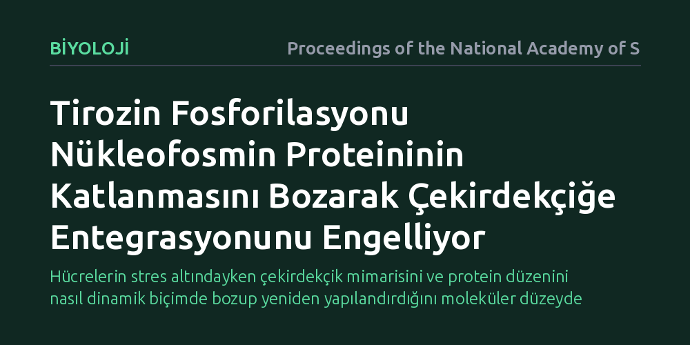

BIYOLOJI · Proceedings of the National Academy of Sciences · 2026-10-19
Araştırmacılar, hücresel stres sırasında nükleofosmin proteinine eklenen fosfat gruplarının proteinin yapısını ve çekirdekçikteki işlevini nasıl etkilediğini inceledi. Çalışma, tirozin kalıntılarındaki fosforilasyonun proteinin üç boyutlu katlanmasını bozarak çözülmesine yol açtığını ve çekirdekçik yapısına katılımını engellediğini ortaya koydu.
Hücrelerin stres altındayken çekirdekçik mimarisini ve protein düzenini nasıl dinamik biçimde bozup yeniden yapılandırdığını moleküler düzeyde açıklıyor.

Hücre çekirdeğinin içinde yer alan çekirdekçik, ribozomların üretildiği ve hücresel dengenin korunduğu hayati bir merkezdir. Bu yapının kararlılığını ve mimarisini sağlayan başlıca yapı taşlarından biri nükleofosmin (NPM1) adlı çok işlevli proteindir. Normal fizyolojik koşullarda nükleofosmin, hem çekirdekçiğin yapısal bütünlüğünü muhafaza eder hem de hücre içi protein trafiğinin düzenli işlemesine olanak tanır.
Ancak hücreler radyasyon, toksik kimyasallar veya metabolik baskılar gibi stres koşullarıyla karşılaştığında çekirdekçik yapısı hızla çözülebilir. Araştırmacılar, proteinlere bağlanan kimyasal fosfat gruplarının (fosforilasyonun) bu stres yanıtını nasıl yönlendirdiğini uzun süredir tartışıyordu; fakat özellikle tirozin amino asitlerindeki fosforilasyonun nükleofosminin yapısını ve yerleşimini tam olarak nasıl değiştirdiği aydınlatılamamıştı.
Araştırma ekibi bu mekanizmayı ortaya çıkarmak için stres koşulları altında nükleofosmin üzerinde gerçekleşen tirozin fosforilasyonlarını haritalandırdı. Biyokimyasal analizlerle fosforillenen özgül bölgeler belirlendi ve bu kimyasal modifikasyonların protein kararlılığı üzerindeki etkileri laboratuvar ortamında adım adım test edildi.
Elde edilen deneysel veriler, atomik ölçekli moleküler dinamik simülasyonları ve hücre kültürü mikroskopi teknikleriyle doğrulandı. Böylece fosfat gruplarının protein omurgasında oluşturduğu yapısal gerilimler, proteinin katlanma stabilitesi ve hücre çekirdeğindeki konumlanma dinamikleri çok yönlü olarak takip edildi.
Elde edilen sonuçlar, tirozin kalıntılarındaki fosforilasyonun nükleofosmin proteininin kararlı üç boyutlu katlanmasını doğrudan bozduğunu gösterdi. Eklenen negatif yüklü fosfat grupları, proteinin katlanmış durumunu koruyan bağları etkileyerek protein zincirinin çözülmesine ve açılmasına neden oldu.
Üç boyutlu yapısı bozulan nükleofosmin, çekirdekçik içindeki diğer protein ve nükleik asitlerle normalde kurduğu etkileşimleri sürdüremedi. Katlanması bozulan protein çekirdekçiğe entegre olamadı ve bu durum çekirdekçiğin mimari düzeninin çözülmesine doğrudan yol açtı.
Bu bulgular, hücrelerin stres altındayken çekirdekçik mimarisini sadece gen ifadesini yavaşlatarak değil, mevcut yapısal proteinlerin biçimini kimyasal modifikasyonlarla değiştirerek hızla dönüştürdüğünü gösteriyor. Proteinin katlanmasının bozulması, burada istenmeyen bir kaza değil, hücrenin strese verdiği dinamik ve programlı bir yanıt adımı olarak öne çıkıyor.
Bulgular ayrıca nükleofosminin anormal dağılım gösterdiği lösemi ve çeşitli kanser türlerindeki hücresel süreçlerin moleküler arka planını anlamak adına değerli bir temel sağlıyor. Yine de bu biyofiziksel mekanizmanın tümör mikroçevresinde ve farklı canlı dokularda nasıl işlediğini belirlemek için daha ileri klinik çalışmalara ihtiyaç duyuluyor.